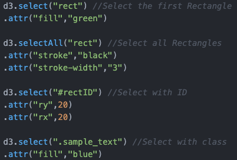

To choose which objects to manipulate, D3 provides the select("mySelector") method, which returns the first element in your document to match the selector, and the selectAll("mySelector") method that returns all elements matching the selector. You can select elements by various criteria, the most important ones being by tag, by class, and by id.
Now we have this SVG here and we want to select some of the elements:
In the code you can find these selections:
And now look what happens, when we click the Button. We have selected the different elements and changed their attributes. And we have learned something new: rounded corners!
We have already used this method and works as expected. This method can be called on the return value of the select() or selectAll() and simply adds new elements as children to the selected nodes.
The parameter we pass to the append() method is a string defining the type of element we want to add. E.g.: div, p, svg, a, h1,... Some elements might be addressed via their namespace-prefix, e.g.: svg:circle. This method works not only for SVG elements, but for all HTML-tags.
Here is an example: We select this gray DIV down here and append text, and with text we define the text. If you can click the button you can see what happens, you can do it even multiple times.
As we have already seen, JavaScript allows us to call functions in a very compact way, via method chaining. This enables us to call multiple functions (on the same object) consecutively:
d3.select("body").append("div").text("Hello World!");
Method calls are connected with periods and the output of each method is used as the input for the next one.
Each element you select can be modified with certain attributes like class, id, etc., and CSS styles, like color, stroke, opacity, etc. To set these values D3 offers the .attr(name, value) and the .style(name, value): For example we can give all our divs the same class and change their text color:
d3.selectAll("div").attr("class","myDivClass"); d3.selectAll(".myDivClass").style("color","orange");
Example: As an example look at the SVG on top of this page.